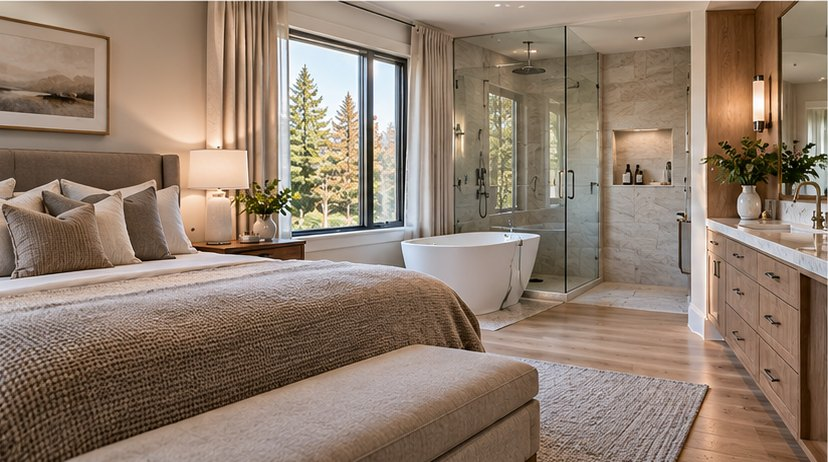

Interiors / Renovation Journal
Planning a Primary Suite Renovation
Coordinate sleeping, bathing, dressing, storage, and privacy.
Retrospective topic: July 2026 · Oakwaters Journal

A successful planning a primary suite renovation project begins with decisions that affect how the home works, not just how it looks. For homeowners in Ontario, the best results come from checking existing conditions, coordinating the relevant trades and making selections before work reaches the point where changes become expensive.
Define what the suite should solve
Is the priority a larger shower, more clothing storage, quieter sleeping space or improved accessibility? Rank needs before moving walls. Extra square footage is not automatically the best answer.
Before requesting prices, ask the contractor to explain how this part of the work will be assessed and what assumptions the estimate makes. Request photographs or a sketch when an important condition will be hidden after installation. A clear record helps distinguish an agreed scope from an unforeseen condition.
Coordinate bedroom and bathroom layouts
Door placement, sightlines and nighttime circulation matter. Avoid locating a bright vanity directly in view of someone sleeping. Plan privacy and sound separation around the bathroom.
Compare at least two realistic approaches using the same criteria: installation requirements, durability, maintenance and impact on adjacent work. A lower material price may not mean a lower installed cost. Ask which decisions must be finalized before products can be ordered.
Design storage around possessions
Measure hanging lengths, folded storage and shoe collections. Decide whether a walk-in closet offers more usable capacity than well-designed reach-in cabinetry. Include lighting inside deep storage.
Walk through the proposed layout at full scale if possible. Tape dimensions on the floor or wall, check the position of existing services and test everyday movement. This simple exercise often reveals conflicts that are difficult to notice in a small drawing.
Prioritize moisture and comfort
The bathroom needs a robust waterproofing and ventilation strategy. Consider heated floors, quiet fans and controllable lighting. Check how the renovation affects heating and cooling in the bedroom.
Confirm the sequence with the people doing the work. One trade may need to complete concealed preparation before another can install visible finishes. Record who supplies each item and who checks dimensions, because missing handoffs can cause delays and rework.
Validate plumbing and structure
Relocating drains or adding large openings can affect joists and service routes. Confirm feasibility before committing to a plan. Coordinate fixtures, tile and cabinetry selections before construction.
At the final walkthrough, compare the completed work with the approved scope and product specifications. Ask for operating instructions, maintenance guidance and warranty documents where applicable. Photograph finished details and retain invoices and approvals for future reference.
Questions to ask before work begins
- Which existing conditions must be inspected before we commit to the planning a primary suite renovation scope?
- Which selections and dimensions must be confirmed before ordering?
- What work is excluded from the estimate, and how will changes be approved?
- Are any municipal permits, inspections or licensed trades required for this specific scope?
- How will completed work be inspected and documented?
A clear written scope, realistic sequencing and decisions made early are more valuable than rushing into demolition. If you are considering a renovation in the Guelph area, Oakwaters Construction can discuss the practical next steps for your home.
Planning a renovation?
Explore what is possible for your home with Oakwaters Construction.
Discuss Your Project →